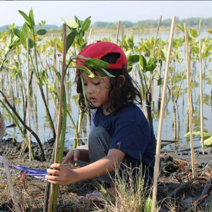

Solusi Banjir Rob Di Kota Pekalongan
Berkaca dari penyebab terjadinya, penanggulangan banjir rob semestinya dilakukan secara kompak antar berbagai pihak. Ada beberapa cara yang dapat dilakukan oleh warga masyarakat untuk dapat mencegah terjadinya banjir rob.
- Reklamasi pantai (pengurugan laut untuk dirubah menjadi daratan) di kota-kota besar, atau negara maju menyebabkan naiknya permukaan air laut sekaligus beralih ke daratan yang lebih rendah.
- Pemanasan global akibat polusi industri pabrik dan asap kendaraan membuat es di kutub utara dan selatan mencair berubah menjadi air laut.
- Penebangan pohon besar-besaran tanpa reboisasi serta pengubahan daerah dataran tinggi menjadi pemukiman perumahan, sehingga air hujan tidak dapat meresap kedalam tanah dengan sempurna, air tersebut mengalir di permukaan langsung menuju lautan.
Penyebab Banjir Rob :
Beberapa cara yang dapat dilakukan untuk dapat mengatasi terjadinya banjir adalah sebagai berikut:
“Baca Juga : Solusi Lahan Sawah Yang Semakin Menyempit”
- Pembuatan tanggul atau talud disepanjang pesisir pantai, hal ini seperti sistem di negara belanda yang daratanya lebih rendah dari muka air laut tapi tidak terkena banjir rob. tapi perlu konstruksi yang bagus agar talud ini tidak bocor serta mampu bertahan oleh dempuran ombak.
- Melakukan pemanenan air hujan di daerah atas, pembuatan pompa untuk daerah bawah, dan membendung air laut yang masuk ke daratan.
- Membuat sumur resapan sehingga air yang berada dipermukaan tanah bisa menambah volume air bawah.
- Melakukan konsep water front city, yaitu menjadikan air sebagai bagian kehidupan sehari- hari dari amsyarakat. Konsep ini dapat diterapkan di aderah yang mempunyai tingkat penurunan tanah yang tinggi. Konsep ini secera tidak langsung menghendaki masyarakat untuk membuat rumah panggung dengan kondisi sekelilingnya adalah air bersih.
- Melakukan konseptidal gate, yaitu meletakkan pintu air atau pintu pasang surut di daerah muara degan tujuan untuk mencegah air laut yang datan dan masuk ke sungai terlalu besar.
- Pembangunan polder, yaitu pembuatan kolam kecil yang digunakan untuk menampung rob. Polder- polder tersebut harus ditata sedemikian rupa dan dilakukan secara terpadu, serta menjadi bagian dari drainase kota.
- Mengurangi efek pemanasan global dengan mengurangi pemakaian kendaraan bermotor dan barang-barang elektronik yang meningkatkan lepasnya gas rumah kaca.
- Menanam mangrove. Akar mangrove dapat berperan sebagai jaring yang menjerat sedimen sehingga mengurangi dampak abrasi akibat adanya banjir rob.

Sobat Bisa Donasi Untuk Membantu Permasalahan Rob Di Kota Pekalongan Klik

EDUCATION, MARKETING